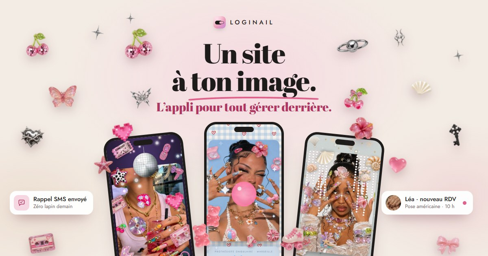
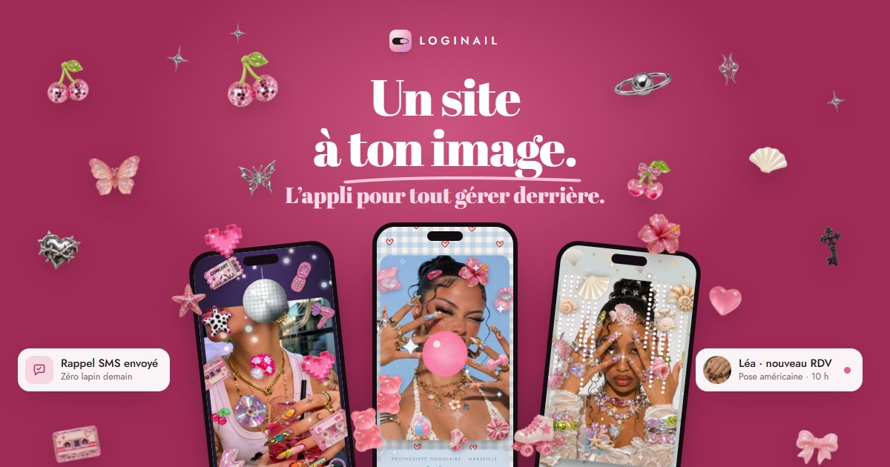

En haut : comme sur Instagram (seul le carré du milieu se voit). En bas : WhatsApp, iMessage, Facebook (l'image entière).
Le rose poudré de l'accueil : on reconnaît le site dès qu'on clique.

Plus pop : ça claque au milieu des messages, mais c'est moins le site.
